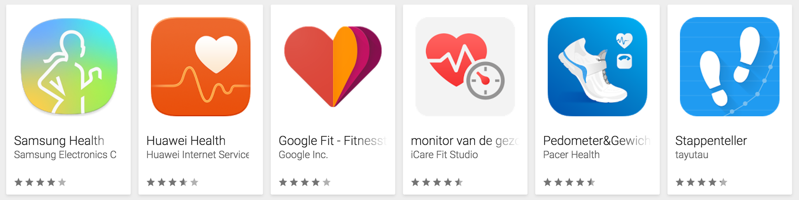
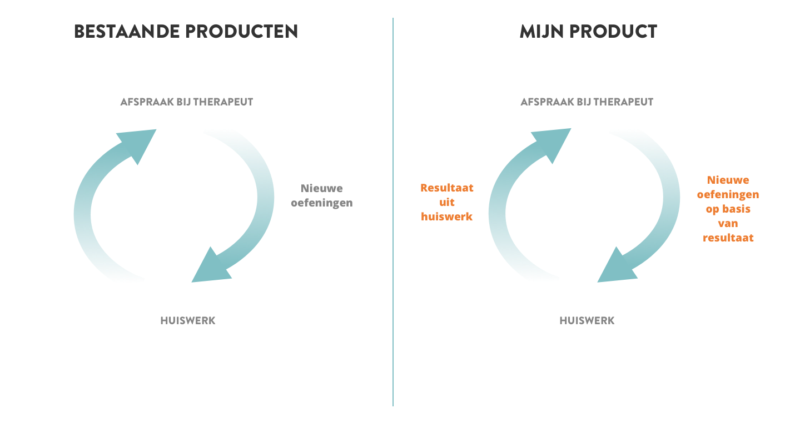

Begeleider
Joost Faber
Student
Berend Holtland
500655838
30-05-2017
V5
Potentiele opdrachtgever
Da Costa Fysiotherapie
1. Inleiding
1.1 Context
Da Costa Fysiotherapie is een praktijk voor fysiotherapie gelegen in Amsterdam. De praktijk specialiseert zich in bekkenfysiotherapie en psychosomatiek. Zelf vind ik het leuk om bedrijven te helpen die nog veel slagen kunnen maken op het gebied van digitale innovatie. Ik koos daarom voor dit project, niet alleen omdat ik de probleemstelling interessant vind, maar ook omdat ik denk mijn CMD-skills hierin goed te kunnen tonen. Het project biedt namelijk de mogelijkheid om alle CMD competenties te kunnen tonen.
1.2 Probleemstelling
Iedereen heeft wel eens gezondheidsproblemen en moet daarvoor naar een specialist. Bij terugkerend bezoek krijg je vaak huiswerk mee van de specialist in de vorm van oefeningen. Zo ook bij Da Costa Fysiotherapie. De praktijk is onder andere gespecialiseerd in bekkenfysiotherapie en geeft vaak huiswerk mee aan de patiënt. Wat de patiënt thuis doet, daar heeft de therapeut geen inzicht in. De therapeut heeft daardoor meer moeite met het vaststellen van de effectiviteit van de oefeningen.
2. Design challenge
Hoe kan een online, interactief product ervoor zorgen dat bekkenfysiotherapeuten meer inzicht krijgen in de effectiviteit van de oefenschema's die ze patiënten meegeven en als gevolg daarvan helpen bij het aanbieden van betere revalidatiemethoden?
3. Stakeholders
3.1 Therapeuten
Probleem: Therapeuten hebben geen inzicht in de mate waarin huiswerk door de patiënt daadwerkelijk wordt uitgevoerd en wat het met de patiënt doet. Daardoor is het lastig in te schatten welke oefeningen goed werken bij het verhelpen van de klacht.
Behoefte: Een manier om inzicht te krijgen in de effectiviteit van de oefeningen die de patiënt uitvoert zodat de klacht sneller verholpen kan worden. Vervolgens kan de therapeut betere oefenschema's aanbieden. dit is geen aanname maar een gevalideerde behoefte, bron 1.
3.2 patiënten
Probleem: patiënten vinden het lastig om consistent te zijn in het uitvoeren van de oefeningen. Het vergt veel moeite en discipline aangezien het niet altijd leuk is om te doen. Sommige mensen houden uberhaubt niet van bewegen. Daarnaast kan het zijn dat de patiënt het saai vindt om de oefeningen vanaf een A4'tje uit te voeren.
Behoefte: Een interactieve app kan het leuker en makkelijker maken voor de patiënt om de oefeningen uit te voeren en de progressie bij te houden. Daarnaast kan het motivatie bieden om harder aan het probleem te werken. Denk bijvoorbeeld aan progressie tracking, badges, audiovisuele begeleiding en gamification. Een positievere ervaring biedt meer motivatie om de klacht (ook thuis) te verhelpen. Deze problemen en behoeften zijn aannames.
4. Trends, kansen en bedreigingen
4.1 Trends
Digitalisering: Steeds meer fysieke handelingen & toepassingen worden gedigitaliseerd. De voordelen van het internet en de interactie van een app dragen bij aan een verbeterde ervaring bij gebruikers. Denk bijvoorbeeld aan online boodschappen doen en online meetings hebben met mensen
E-health: Steeds meer mensen maken gebruik van apps die om gezondheid draaien. Denk aan fitness apps, smartwatches met hartslagmeters en gps, yoga apps etc. Deze applicaties komen voort uit de behoefte om inzicht te krijgen in de eigen gezondheid. Dit kan sportgerelateerde maar ook klachtgerelateerde doeleinden hebben. Zie bron 2.
4.2 Kansen
Ontspanningsapps zijn al in grote mate beschikbaar in app-stores. Het aanbod voor apps gericht op bekkenfysiotherapie is zeer gering. Daarnaast is de gebruiksvriendelijkheid nog matig. Hierin valt veel te behalen.
4.3 Bedreigingen
Een bedreiging is dat je nooit compleet betrouwbare informatie op kunt halen uit een digitale toepassing. In theorie zouden mensen de toepassing aan kunnen zetten, maar kun je lastig controleren of de oefeningen daadwerkelijk worden uitgevoerd en of zij effectief zijn. Ook privacy speelt mee. Niet iedereen wil zijn/haar persoonlijke data delen met de therapeut. Daarnaast is er al een Bekkenbodem app met veel informatie over bekkenbodem klachten. De app (bron 3) heeft zelfs een paar interactieve oefeningen.
5. Productvisie
Op termijn zou het product uitgebreid kunnen worden naar een toepassing voor algemene fysiotherapie en specialisaties. Ik kies nu echter voor bekkenfysiotherapie omdat het probleem hier in ieder geval ondervonden wordt en het mij meer focus kan bieden.
Wat maakt mijn product beter dan bestaande apps? Mijn product biedt niet alleen ondersteuning aan de patiënt, maar helpt ook vooral de therapeut om meer inzicht te krijgen in het revalidatieproces. Iets wat andere apps nog niet doen. Daarnaast is het de bedoeling dat mijn product onderdeel wordt van de therapie, en dat het niet alleen als informatieportal dient. Ook valt er nog veel te behalen op het gebied van een gebruiksvriendelijke interface.
Voor de patiënt: De patiënt krijgt een web toepassing die hem/haar ondersteunt bij het uitvoeren van de oefeningen. De gebruiker kan zelf de progressie van de oefeningen bijhouden. Daarnaast is het mogelijk om schema's uit te voeren die door de therapeut zijn samengesteld. De applicatie zal in het begin alleen bekkenfysiotherapeutische behandelingen bevatten. Dit zijn bijvoorbeeld "Kegeltrainingen" en ontspanningsoefeningen. De oefeningen begeleiden de patiënt door middel van visuals, geluid en zelfs trilsignalen afhankelijk van de oefeningen en de voorkeur van de patiënt.
Voor de therapeut: De therapeut krijgt een backend portal om accounts voor de patiënt aan te maken en inzicht te krijgen in zijn/haar progressie. Daarnaast kan de therapeut aangepaste oefenschema's aanmaken en opslaan als templates. Oefeningen worden vanuit de portal op maat afgesteld op de patiënt. De patiënt krijgt de toegewezen oefeningen direct in zijn/haar toepassing te zien. Het liefst wil ik de therapeut een overzicht geven van de dagplanning om zo snel mogelijk in een "patiëntendossier" binnen de toepassing te komen. Dat kan de therapeut veel zoekwerk schelen.
6. Onderzoeksvragen
6.1 Onderzoek
- Waar lopen patiënten tegenaan wanneer zij oefeningen moeten uitvoeren?
Interview, field research. - Hoeveel uitleg heeft een bekkenfysiotherapiegerelateerde oefening nodig?
Oberservatie, fly on the wall. - Hoevaak moet een patiënt oefeningen doen?
Interview. - Wat voor bekkenfysiotherapiegerelateerde oefeningen zijn er?
Desk research, interview. - Op welke manier worden oefeningen momenteel aangeboden?
Desk research, interview. - Welke apps bestaan er op het gebied van bekkenfysiotherapie en welke behoeften vervullen zij al?
Deskresearch.
6.2 Concept
- Welke features zijn bruikbaar voor een MVP en welke zijn nice to have?
Ideation, user testing. - Hoe zorg ik ervoor dat de toepassing niet te privacygevoelig wordt?
Ideation, Interviews, User testing.
6.3 Prototyping & testing
- Hoe gaat het eerste prototype eruit zien en welke prototyping tool is daarvoor het meest geschikt?
Deskresearch, trial. - Hoe wordt de interactie ervaren?
User testing.
6.4 Development
- Welke scripttaal / welk framework is geschikt voor het maken van de applicatie?
Deskresearch.
7. Belangrijkste mijlpalen
Week 1/5
In deze fase ligt de focus op het concreet maken van het project en de probleemstelling in de vorm van een design challenge en een planning.
Deliverables & Momenten
- Designbrief
- Roadmap
Week 6/7
In deze fase ga ik grondig onderzoek doen. Dit onderzoek bestaat uit Desk en field research.
Deliverables & Momenten
- Behaviour design canvas
- Customer Journey en Mindmap
- Concurrentie analyse
- Uitkomsten interviews
Week 7/9
Binnen deze twee weken ligt de focus op het uitwerken van een concept. Het is de bedoeling dat features hier concreet worden gemaakt en dat de oplossing vorm begint te krijgen.
Deliverables & Momenten
- User stories / scenario's
- Requirements List
- MVP definitie
- Feedback Frenzy
- Testen van eerste concepten bij doelgroep
Week 10/14
Met het oog op de groenlicht presentatie wil ik hier laten zien hoe mijn oplossing eruit ziet en hoe het werkt. Op die manier kan ik mij na de groenlicht presenatie focussen op het bouwen van de applicatie.
Deliverables & Momenten
- Lo-fi sketches
- Hi-fi sketches
- Design document
- Style guide
- Interactieve prototypes
- Groenlicht presentatie
- Rapid prototyping tests bij doelgroep
Week 12/18
Bij de groenlicht presentatie wil ik uiteraard al iets laten zien van het uiteindelijke product. Prototyping en bouwen gaan in principe ook samen (html prototypes).
Deliverables & Momenten
- Eindproduct + Rapport
Week 18/20
De laatste weken zijn bedoeld om een video te maken en voorbereidingen te treffen voor de verdediging.
Deliverables & Momenten
- Verdediging
- Video
8. Expertreview
Marjolein van der Laan - (bijna) ex-CMD'er
"Ik denk dat je probleemstelling goed is en zeker CMD waardig is. Wel raad ik je aan om goed in te schatten wat je binnen de gegeven tijd kunt opleveren. Een backend systeem en een oefeningen app zijn twee verschillende toepassingen. In de tijd die je hebt kan dat wel eens lastig worden.
Let ook goed op dat je onderzoeksvragen en je design challenge zo concreet mogelijk zijn. Dit helpt je heel erg tijdens je project. Probeer bij je trends ook voorbeelden te geven van die trends, dat kan dus concreter."
Je koos ervoor om drie stakeholders te benoemen. Namelijk de therapeut, de patiënt en de verzekeringsmaatschappij. Je kunt naar mijn mening beter de focus leggen op de therapeut en de patiënt en niet de verzekeringsmaatschappij. Die zijn namelijk niet direct betrokken bij het probleem."
9. Bronnen
Bron 1: Uitspraken van Marianne Voet - bekkenfysiotherapeute
Bron 2: NOC*NSF. "De Belangrijkste Gezondheidsapps Van Dit Moment." Sport.nl. Web. 23 May 2017. sport.nl/artikelen/2016/01/de-belangrijkste-gezondheidsapps-van-dit-moment.
Bron 3: Bekkenbodem app